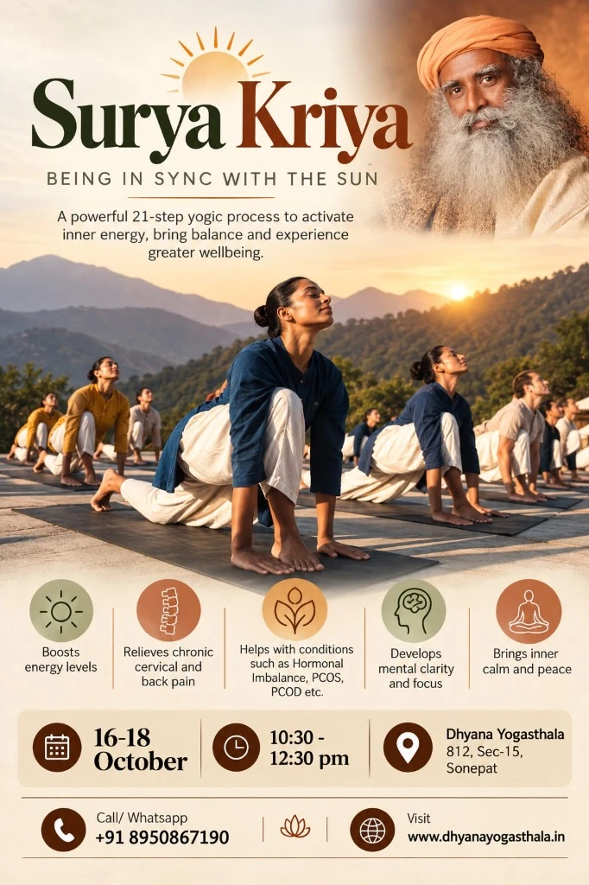

Surya Kriya
A powerful 21-step yogic process to activate inner energy, bring balance and experience greater wellbeing. Traditionally available only to select groups of yogis, Surya Kriya is being offered by Sadhguru as a complete spiritual process for the modern world.
Five Pillars of Surya Kriya
Surya Kriya is a potent 21-step yogic practice of tremendous antiquity. It activates the solar plexus to raise samat-prana, or solar heat, establishing balance between physical and psychological dimensions.
Boosts Energy Levels
Surya Kriya activates the solar plexus (Manipura Chakra) to raise samat-prana—the solar heat in the system. It eliminates chronic lethargy, providing sustained, jitter-free vitality throughout your day without caffeine or stimulants.
Relieves Chronic Cervical & Back Pain
Works directly with the 24 vertebrae of the human spine. Realigning natural musculoskeletal geometry releases accumulated neck, shoulder, and lumbar strain caused by long hours of desk work and sedentary living.
Hormonal Balance, PCOS & PCOD
The geometric posture sequence stimulates the endocrine glands—especially the thyroid, pituitary, and reproductive organs. Regular practice brings equilibrium to hormones, improves metabolic health, and aids menstrual regularities.
Develops Mental Clarity & Focus
Synchronizing dynamic postures with precise breath control harmonizes the left and right hemispheres of the brain. It dissolves compulsive overthinking, clears mental fog, and instills laser-sharp focus.
Brings Inner Calm & Peace
Beyond physical exercise, Surya Kriya is fundamentally a spiritual process. It establishes a resilient inner anchor that remains unshaken amidst external turbulence, naturally opening the gateway to deep meditative states.
What is Surya Kriya & How You Learn It
Surya Kriya is fundamentally distinct from Surya Namaskar. While Surya Namaskar is often practiced as a physical workout, Surya Kriya is an ancient sacred process taught step-by-step so you can practice independently for life.
Foundational Geometry & Preparatory Asanas
Loosening the joints through Upa-Yoga, spinal activation, understanding the correct anatomical alignment, and learning the initial sequence of postures step-by-step.
The 21-Step Sequence & Breath Synchronization
Integrating all 21 steps into a seamless flow. Synchronizing precise breath patterns with each posture to activate the inner solar energy channels.
Subtle Corrections & Independent Home Practice
Individual posture corrections, addressing personal queries, practice refinement, and detailed guidelines to sustain your independent 20–30 minute daily practice at home without any dependencies.
Guidelines for Attendees
Please review these simple prerequisites to ensure a safe, pure, and deeply impactful yogic experience.